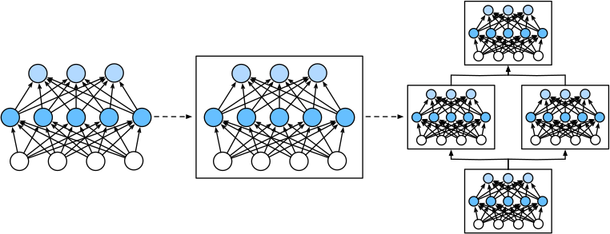

7Advanced Machine Learning
This slide deck is still under active development. Expect changes before it is finalized.
__init__, self, super(), and __call__ in codenn.Module subclass with __init__ (create parameters) and forward (inputs to predictions)training_step / loss / configure_optimizers as optional packaging on top of that interfaceBundling data with behavior
Answering “are all models going to be classes?”
7Line(2, 1) builds an object; line.predict(3) calls a method on itw and b between calls__init__Line(2, 1): it is the constructorself.somethingself| Java | Python | |
|---|---|---|
| Constructor | same name as the class | __init__ |
| Current object | this (implicit) |
self (explicit first parameter) |
| Creating an object | new Line(2, 1) |
Line(2, 1) |
| Fields | declared up front | created by assigning to self.x |
| Private | private keyword |
convention only: _name |
__init__, __call__, __len__, …| We write | Python runs |
|---|---|
Line(2, 1) |
Line.__init__(...) |
len(x) |
x.__len__() |
line(3) |
line.__call__(3) |
__call__: objects that act like functions7line(3) looks like a function call, but line is an object holding w and bmodel(X) for a modelsuper()-4 0ReluLine(Line) is a Line, and gets its methods for freesuper() reaches the parent’s version: here we reuse Line’s setup and its __call__, then clip at zerosuper().__init__(...) is essential!Important
Forgetting super().__init__(...) means the parent never sets up its part. With nn.Module this is a real bug, as we’ll see.
class Line:
def __init__(self, w, b): # constructor: remember the numbers
self.w = w
self.b = b
def predict(self, x): # a method: uses the remembered numbers
return self.w * x + self.b
def __call__(self, x): # dunder: makes line(3) work
return self.predict(x)
class ReluLine(Line): # inheritance: a ReluLine IS a Line
def __init__(self, w, b):
super().__init__(w, b) # let the parent set up its part
def __call__(self, x):
return max(0, super().__call__(x))What we expect of every model
A model is an object that owns its parameters and knows how to turn inputs into predictions. Everything else comes for free.
__init__ builds, forward computesnn.Module is the base class: we don’t have to write anything elsenn.Module gives us for freemodel(X): run the forward pass (through __call__)model.parameters(): every trainable number, ready to hand to an optimizermodel.to(device): move everything to the GPU in one callmodel.state_dict(): save and load the parametersmodel.train() / model.eval(): switch modesNote
None of this is in our code. We inherit it by writing nn.Module in the class line and calling super().__init__().
model(X) is __call__ againmodel(X) runs model.forward(X) plus PyTorch’s bookkeepingmodel(X), never model.forward(X): calling forward directly skips the bookkeepingsuper().__init__() first, before assigning any parameters or sub-modelsnn.Parameter, and assign sub-models as attributesmodel(X), not model.forward(X)class Broken(nn.Module):
def __init__(self):
super().__init__()
self.layers = [nn.Linear(3, 3), nn.Linear(3, 1)] # plain list
class Fixed(nn.Module):
def __init__(self):
super().__init__()
self.layers = nn.ModuleList([nn.Linear(3, 3), nn.Linear(3, 1)])
print(len(list(Broken().parameters())), len(list(Fixed().parameters())))0 4nn.Module: the optimizer would get zero parameters and nothing would ever trainnn.ModuleList is a list that nn.Module can see intoimport torch
from torch import nn
class Model(nn.Module):
def __init__(self):
super().__init__() # rule 1: always first
# rule 2: parameters as nn.Parameter, sub-models as attributes
# (use nn.ModuleList for a list of sub-models)
def forward(self, X):
"""Given X, return y_hat."""
...
model = Model()
y_hat = model(X) # rule 3: call the model, not .forward
model.parameters() # everything trainable, found for usFrom one line to an MLP
A model can contain other models, and every one of them has the same interface, so we can stack them like blocks.
nn.Parameter marks a tensor as “training may change this”tensor([73.5000], grad_fn=<AddBackward0>)model(x) is the whole interface[('weight', torch.Size([1, 3])), ('bias', torch.Size([1]))]nn.Linear(3, 1) is our LinearRegression (weights stored as a 1 \times 3 matrix)nn.Linear(3, 2) would be a two-output model in one object: a 2 \times 3 W and two biasesnn.Module too, so it has the same interface as oursLinearRegression per outputtensor([[73.5000, 59.7000]], grad_fn=<StackBackward0>)len(list(both.parameters())) is 4
Figure: Zhang et al., Dive into Deep Learning, §6.1 (d2l.ai), CC BY-SA 4.0
forwardimport torch.nn.functional as F
class MLP(nn.Module):
def __init__(self, num_features, num_hidden, num_outputs):
super().__init__()
self.hidden = nn.Linear(num_features, num_hidden)
self.out = nn.Linear(num_hidden, num_outputs)
def forward(self, X):
return self.out(F.relu(self.hidden(X)))
mlp = MLP(3, 4, 2)
print(mlp(x).shape, sum(p.numel() for p in mlp.parameters()))torch.Size([1, 2]) 26__init__ creates the pieces, forward wires them togethermlp(x). 26 parameters: 3 \cdot 4 + 4 in the hidden layer, 4 \cdot 2 + 2 in the outputnn.Sequentialtorch.Size([1, 2])nn.Sequential is itself a model whose forward runs its pieces in orderforwardclass LinearRegression(nn.Module): # 1. a single linear model
def __init__(self, num_features):
super().__init__()
self.w = nn.Parameter(torch.randn(num_features))
self.b = nn.Parameter(torch.zeros(1))
def forward(self, X):
return X @ self.w + self.b
class ParallelLinear(nn.Module): # 2. a model of models
def __init__(self, num_features, num_outputs):
super().__init__()
self.models = nn.ModuleList(
[LinearRegression(num_features) for _ in range(num_outputs)])
def forward(self, X):
return torch.stack([m(X) for m in self.models], dim=-1)
class MLP(nn.Module): # 3. layers + a nonlinearity
def __init__(self, num_features, num_hidden, num_outputs):
super().__init__()
self.hidden = nn.Linear(num_features, num_hidden)
self.out = nn.Linear(num_hidden, num_outputs)
def forward(self, X):
return self.out(F.relu(self.hidden(X)))Who does what
Training is a loop where separate objects each do one job, and the loop itself only calls them in the right order.
| Job | Who does it | In code |
|---|---|---|
| Turn inputs into predictions | the model | model(X) |
| Score the predictions | the loss function | loss_fn(y_hat, y) |
| Compute gradients | autograd | loss.backward() |
| Update the parameters | the optimizer | optimizer.step() |
| Hand out mini-batches | the data loader | for X, y in loader: |
model.parameters()zero_grad()?loss.backward() adds to each parameter’s .grad, it does not overwrite itzero_grad(), gradients from the previous batch pile up and our step points the wrong waytrain(), eval(), and no_gradmodel.train(). The loop above runsmodel.eval() and wrap the pass in torch.no_grad(). We only want predictions, not gradients.train() / .eval() is how we tell them, and it is one of the free nn.Module methodsThe math we already know
The code
for X, y in loader:y_hat = model(X)loss.backward()optimizer.step() (with lr = \eta)torch.manual_seed(0)
W_true = torch.tensor([[0.8, 0.1, -0.05], [0.3, 0.6, -0.02]])
b_true = torch.tensor([10.0, 5.0])
X_all = torch.randn(256, 3)
Y_all = X_all @ W_true.T + b_true + 0.1 * torch.randn(256, 2)
loader = torch.utils.data.DataLoader(
torch.utils.data.TensorDataset(X_all, Y_all), batch_size=32, shuffle=True)
model = ParallelLinear(3, 2)
loss_fn = nn.MSELoss()
optimizer = torch.optim.SGD(model.parameters(), lr=0.1)
for epoch in range(5):
model.train()
for X, y in loader:
optimizer.zero_grad()
loss = loss_fn(model(X), y)
loss.backward()
optimizer.step()
print(epoch, round(loss.item(), 3))0 16.316
1 3.096
2 0.53
3 0.145
4 0.035model = Model() # any nn.Module subclass
loss_fn = nn.MSELoss() # any loss
optimizer = torch.optim.SGD(model.parameters(), lr=0.1) # any optimizer
for epoch in range(num_epochs):
model.train()
for X, y in train_loader:
optimizer.zero_grad() # 1. clear old gradients
y_hat = model(X) # 2. forward pass
loss = loss_fn(y_hat, y) # 3. score it
loss.backward() # 4. gradients
optimizer.step() # 5. update
model.eval()
with torch.no_grad(): # evaluation: predictions only
for X, y in val_loader:
val_loss = loss_fn(model(X), y)Optional packaging on top of the interface
Note
This is an optional convenience. Nothing in PyTorch requires it. It is what d2l does, and what our earlier demos did with model.loss.
class Regressor(nn.Module):
def __init__(self, lr=0.1):
super().__init__()
self.lr = lr
def loss(self, y_hat, y):
return F.mse_loss(y_hat, y)
def configure_optimizers(self):
return torch.optim.SGD(self.parameters(), lr=self.lr)
def training_step(self, batch):
X, y = batch
return self.loss(self(X), y)Regressor adds loss, configure_optimizers, and training_step to nn.Moduleforward yet: a subclass supplies thatMLPRegressor is a Regressor is an nn.ModuleforwardExplicit
Tip
Reading d2l: its Module class is this idea. training_step, loss, and configure_optimizers are packaging, not requirements of the interface.
class Regressor(nn.Module): # adds training conveniences
def __init__(self, lr=0.1):
super().__init__()
self.lr = lr
def loss(self, y_hat, y):
return F.mse_loss(y_hat, y)
def configure_optimizers(self):
return torch.optim.SGD(self.parameters(), lr=self.lr)
def training_step(self, batch):
X, y = batch
return self.loss(self(X), y)
class MLPRegressor(Regressor): # a concrete model
def __init__(self, num_features, num_hidden, num_outputs, lr=0.1):
super().__init__(lr)
self.hidden = nn.Linear(num_features, num_hidden)
self.out = nn.Linear(num_hidden, num_outputs)
def forward(self, X):
return self.out(F.relu(self.hidden(X)))
class Classifier(Regressor): # same loop, different loss
def loss(self, y_hat, y):
return F.cross_entropy(y_hat, y)| Piece | What it is | What we write |
|---|---|---|
| Model | an nn.Module subclass |
__init__ (build) and forward (compute) |
| Loss | a function of \hat y and y | nn.MSELoss(), F.cross_entropy, … |
| Optimizer | takes model.parameters() |
torch.optim.SGD(...), Adam(...) |
| Loop | five lines per batch | zero, forward, loss, backward, step |
| Packaging (optional) | subclass adds loss etc. |
training_step, configure_optimizers |
Note
Going forward, every model in this course is an nn.Module subclass with this shape. Convolutions, recurrent layers, and attention are more blocks with the same interface.
import torch
from torch import nn
import torch.nn.functional as F
class Model(nn.Module):
def __init__(self):
super().__init__() # always first
self.hidden = nn.Linear(3, 4) # sub-models / parameters
self.out = nn.Linear(4, 2)
def forward(self, X): # inputs -> predictions
return self.out(F.relu(self.hidden(X)))
model = Model()
loss_fn = nn.MSELoss()
optimizer = torch.optim.SGD(model.parameters(), lr=0.1)
for epoch in range(num_epochs):
model.train()
for X, y in train_loader:
optimizer.zero_grad() # 1. clear gradients
loss = loss_fn(model(X), y) # 2-3. forward, score
loss.backward() # 4. gradients
optimizer.step() # 5. updateCST463 · Advanced Machine Learning